01
Montro Residence
Now launching01 / Sheikh Zayed
Montro Residence
Hotel-serviced residences, run with Swiss Inn — minutes from Sphinx International Airport.
- Type
- Serviced apartments
- Bedrooms
- 1–3
- Handover
- Q4 2029
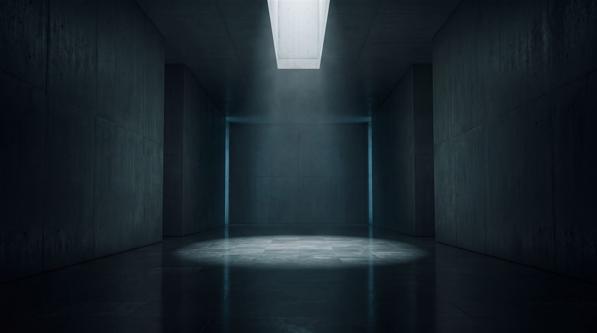
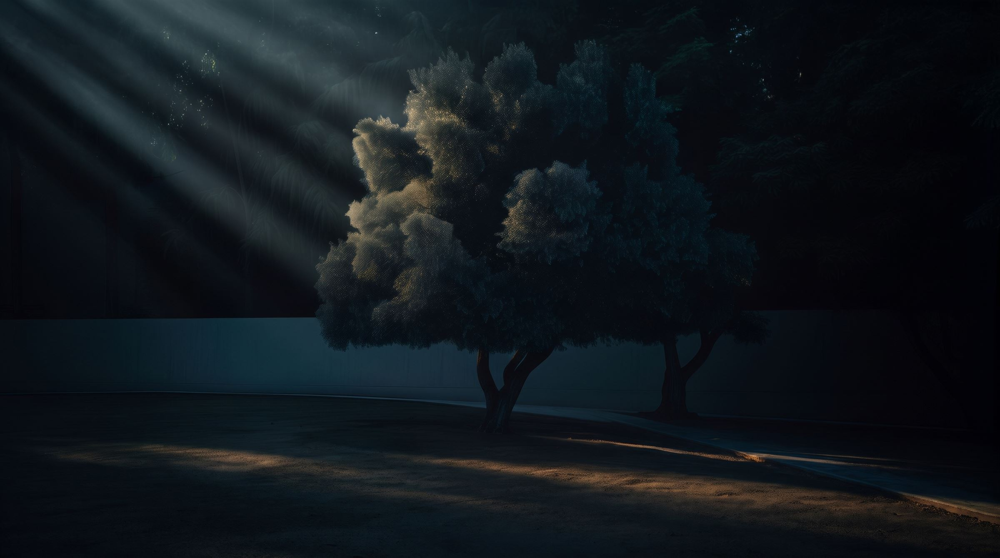
A family-built developer creating timeless communities in West Cairo — built by families, for families, since 1995.
Every foundation needs a structure to protect it.
Every road needs a guide to lead the way.
Every tree grows branches and leaves that give shade and life.
And every strong line needs another to strengthen it.
Because transformation is at the core of what we do.
Residence by T Developments
The first hotel-serviced residence in the area — in partnership with Swiss Inn, minutes from Sphinx International Airport.
Communities in West Cairo — each designed around privacy, green space and the way families live.
Hotel-serviced residences, run with Swiss Inn — minutes from Sphinx International Airport.
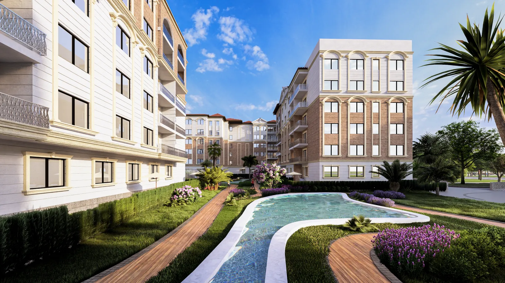
A private compound of clubhouse, sports and green walks — crafted around family life.
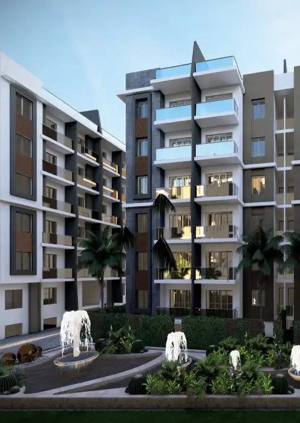
Modern residential architecture set in lush, landscaped gardens.
Tell us how your family lives — a T advisor will show you where it fits.
Every T address sits on West Cairo’s main arteries — the airport, the malls and the city are a short drive away.
Approximate off-peak drive times from Sheikh Zayed.
T is more than a developer. It’s a mindset built on trust, transformation, and timeless value — shaping how people live, connect, and grow.
One family, one line — five moments that shaped T.
Land acquisition and trading — the first line, drawn with patience.
A shift from land investment to building, construction and sales.
Projects delivered with consistency and commitment — through every market cycle.
Taj Developments is established — experience-driven communities in West Cairo.
The same family, vision and standards — a new name, built for tomorrow.
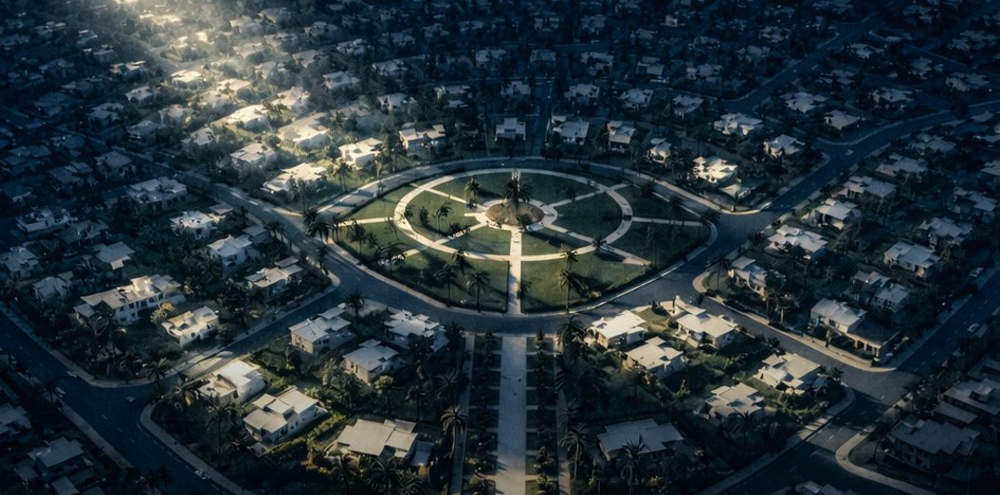
Projects across six destinations in West Cairo — delivered with consistency, through every market cycle.
One mark, one project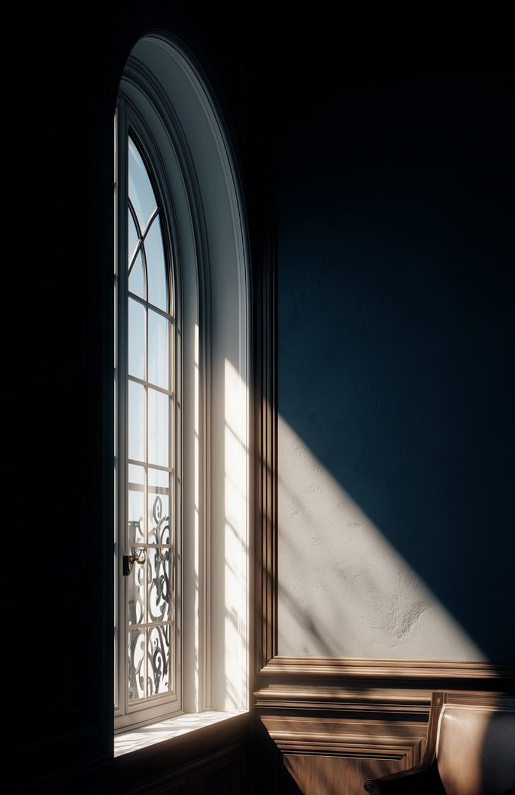
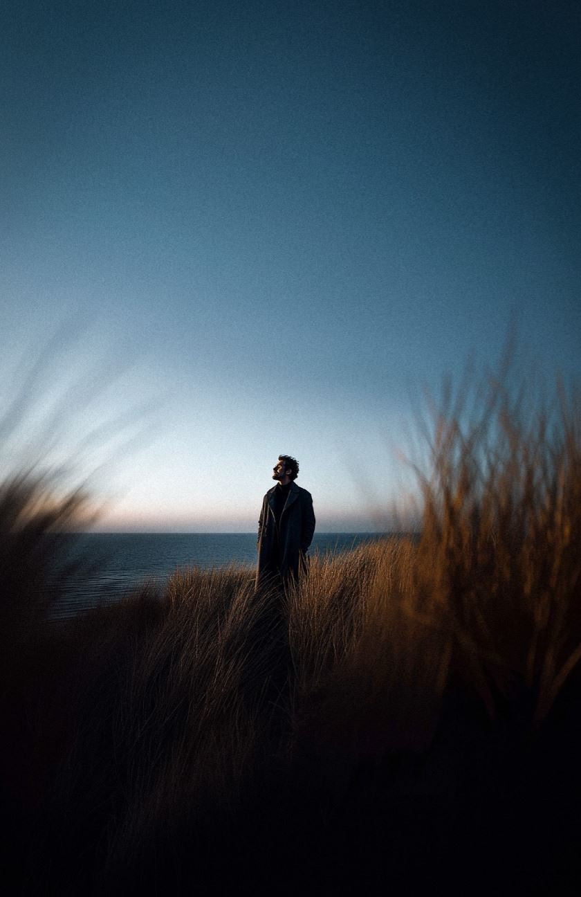
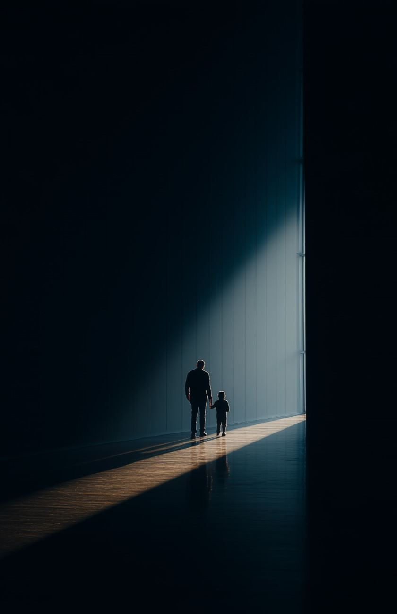
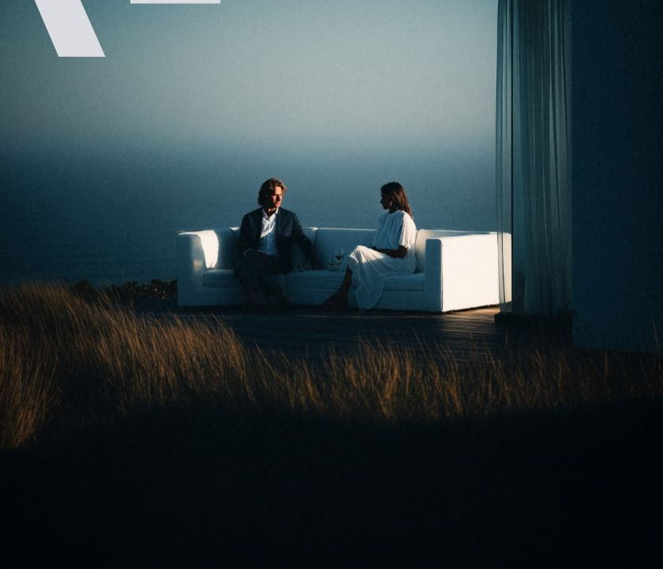
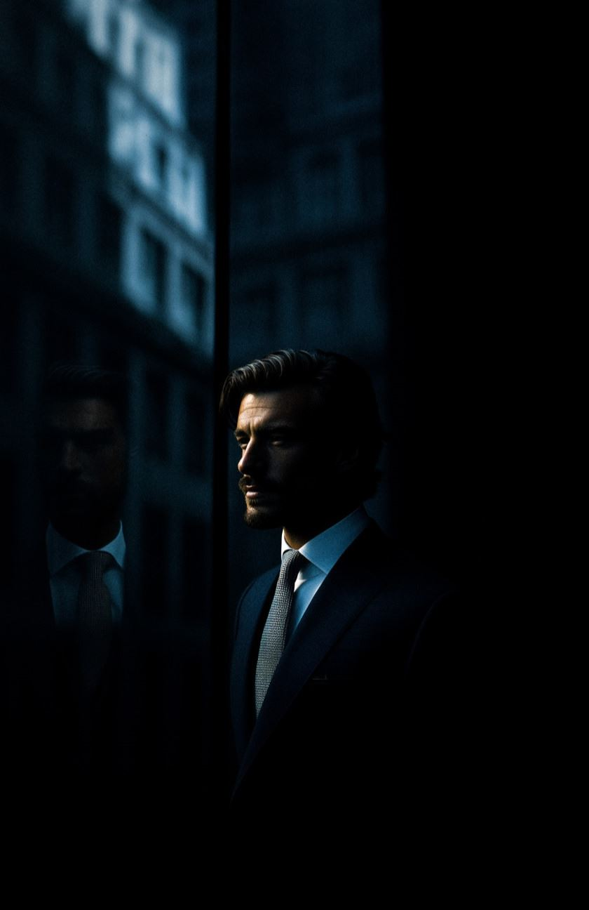
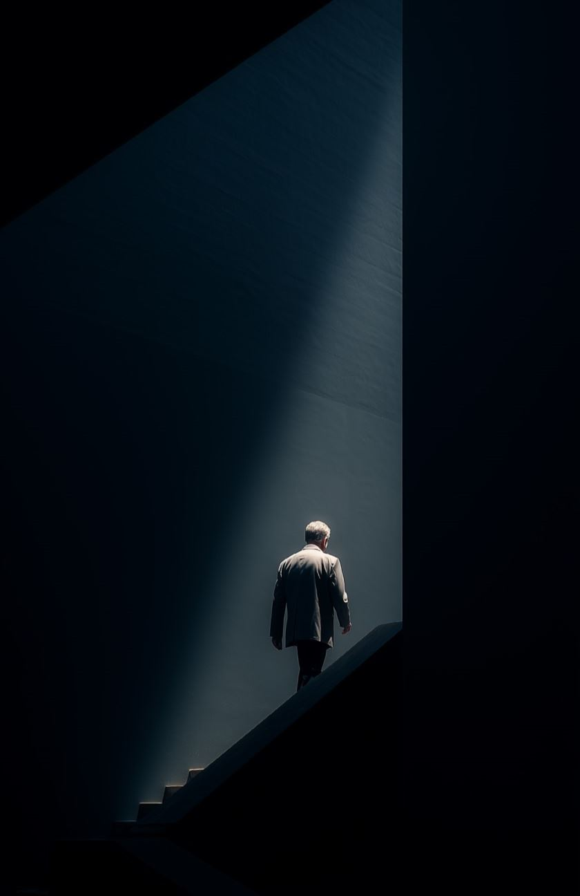
We build with honesty, integrity, and a commitment to delivering what we promise.
We create developments designed to last across generations.
We design environments where families and communities grow and prosper.
As a family business, we build spaces that bring families and communities closer together.
We transform land into meaningful places that elevate everyday living.
We believe in clear communication and trust with every client and partner.
We build with a forward vision, shaping spaces for future generations.
Tell us where you see yourself — a T advisor will call you within one working day.
A T advisor will call you shortly.